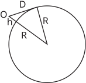

Long description: sphere

Alt text: A diagram illustrating the Earth's sphere with a tangent drawn from an observation point O.
This description was generated by AI and has not been verified by a human. If you spot an error, please use the feedback link below.
- The image shows a circular diagram representing a sphere, labeled with a radius \(R\).
- A point labeled \(O\) is located outside the sphere, representing an observation point.
- A line segment connects the center of the sphere (implied, or the point where the perpendicular falls) to the point of tangency on the sphere, labeled \(h\) (which appears to represent the height or radius segment).
- A straight line is drawn from point \(O\) to a point on the sphere, labeled \(D\), such that this line appears to be tangent to the sphere at \(D\).
- A right-angled triangle is formed by the observation point \(O\), the point of tangency \(D\), and a third implied point, with sides labeled \(R\) and \(h\) forming the sides of the triangle adjacent to the right angle at \(D\) (or the perpendicular connection from \(O\) to the tangent line). The relationship suggests that \( riangle ODO'\) is a right-angled triangle, where \(O\) is the observation point, and \(D\) is the point of tangency.